보내는 사람이호원 (airtaxi)
받는 곳대한민국 .NET Conf 2026
.NET으로 만드는
MSIX 인스톨러 자동화
샌드박스 배포를 더블클릭 한 번으로
누르면 전체 화면으로 시작합니다
보내는 사람이호원 (airtaxi)
받는 곳대한민국 .NET Conf 2026
설치 방법더블클릭 1회
.NET으로 만드는
MSIX 인스톨러 자동화
샌드박스 배포를 더블클릭 한 번으로
패키지 형식MSIX
내용물Package.msixbundle
아키텍처x64, arm64, x86
출력Installer.exe
구간시작하며
쪽
이호원 airtaxi
Windows를 좋아해서 C#과 .NET을 시작했고,
지금은 WinUI와 Uno Platform으로 Windows 앱을 만듭니다.
이전게임 개발자, 아크스타
인디 리듬게임 회사에서
게임 서버와 클라이언트 개발
학위컴퓨터공학 박사, 선문대학교
멀티모달 LLM과 RAG 기반
화재 대응 조언 시스템
지금서울 현충원
박사 졸업 후 사회복무요원으로 복무 중
개발은 퇴근 후에 합니다
공개한 오픈소스AT Installer, DeskBorder, LidGuard 등 Windows 앱 15개 이상
GitHubgithub.com/airtaxi
구간시작하며
쪽
이 발표에서 다루는 내용
자동화MSIX 사이드로딩 자동화
권한 상승, 인증서 신뢰, 설치된 버전 비교, 배포 API 호출을 모두 코드로 처리합니다.
.NET과 WinRT.NET에서 Windows 배포 API 호출
PackageManager, AsTask(), IProgress<T>로 설치 진행률까지 연결합니다.
확장GUI 도구를 CLI와 CI로 확장
공통 라이브러리, NativeAOT, RID별 도구 패키지로 빌드 파이프라인에 넣습니다.
구간시작하며
쪽
오늘의 순서
| 순서 | 구간 | 다루는 내용 |
|---|---|---|
| 1 | 왜 MSIX인가 | 자체 인스톨러의 한계, 가상화가 해결하는 것 |
| 2 | 사이드로딩의 벽 | 인증서 오류, 공인 인증서가 대안이 되기 어려운 이유 |
| 3 | 데모: Tauri 앱 더블클릭 설치 | 설치부터 제거 후 흔적 비교까지 |
| 4 | 설치기 내부 구조 | 더블클릭 뒤에서 일어나는 일, .NET에서 WinRT 쓰기 |
| 5 | 생성기 내부 구조 | 아키텍처 감지, 매니페스트 읽기, 패키징, SFX 조립 |
| 6 | 데모: .NET 앱 CLI 파이프라인 | dotnet publish부터 인스톨러까지 |
| 7 | .NET 플랫폼 활용 | 코드 공유, NativeAOT, RID별 dotnet tool, CI |
구간 1
왜 MSIX인가
출발점직접 만든
.atp 인스톨러한계앱이 실행 중에 남긴 흔적은 인스톨러가 모릅니다
전환운영체제가 설치와 제거를 관리하는 MSIX
구간왜 MSIX인가
쪽
AT Installer 개발 과정
2023년 12월부터 2026년 10월까지, 커밋 198개
| 시기 | 변화 |
|---|---|
| 2023-12 | ZIP 기반 .atp 패키지와 자체 인스톨러, 7z SFX로 단일 EXE 생성 |
| 2025-12 | .NET 10 전환, Installer와 Composer에 NativeAOT 적용 |
| 2026-04 | 명령줄 Composer 추가, 자동화용 --minimal-log 옵션 |
| 2026-07-08 | Installer가 .msix와 .msixbundle을 직접 설치, 같은 날 MSIX 인스톨러 생성기 시작 |
| 2026-07-11 | 공통 라이브러리 분리, aticmsixgen CLI를 NuGet dotnet tool로 배포 |
구간왜 MSIX인가
쪽
자체 인스톨러는 모든 것을 직접 관리해야 했습니다
| 관리 대상 | 직접 처리한 방법 |
|---|---|
| 설치 위치 | %AppData%\{InstallationFolderName}에 압축 해제 |
| 제거 정보 | HKCU\...\CurrentVersion\Uninstall에 직접 등록 |
| 설치한 파일 목록 | 제거할 때 지우려고 InstalledFiles를 매니페스트에 따로 기록 |
| 스크립트 | 설치 후, 재설치 후, 제거 시 실행할 스크립트를 각각 지원 |
| 제거 배치 파일 | 유니코드 문자가 깨지는 문제로 UTF-8 인코딩 지정 |
그래도 앱이 실행 중에 AppData와 레지스트리에 남긴 흔적은 알 수 없습니다
구간왜 MSIX인가
쪽
이 발표에서 말하는 샌드박스는 파일과 레지스트리 가상화입니다
앱의 권한을 제한하는 AppContainer 격리와는 다릅니다. 그래도 설치와 제거를 관리하는 데는 가상화만으로 충분합니다.
AppData 쓰기패키지 전용 위치로 리디렉션
HKCU 쓰기패키지 전용 레지스트리로 리디렉션
제거운영체제가 리디렉션된 데이터까지 함께 삭제
설치 폴더읽기 전용으로 관리되어 앱이 덮어쓰지 못함
배포 단위
.msixbundle 하나에 x64, x86, ARM64대상 앱Electron, Tauri, WPF처럼 MSIX를 기본 제공하지 않는 앱도 포장
자체 인스톨러에서 InstalledFiles로 직접 추적하던 일을 이제 운영체제가 처리합니다.
구간 2
사이드로딩의 벽
시연.msixbundle을 더블클릭하면 생기는 일
원인이 PC가 게시자 인증서를 신뢰하지 않습니다
질문공인 인증서를 사면 되지 않을까요?
구간사이드로딩의 벽
쪽
앱 설치 관리자와 PowerShell 모두 같은 이유로 실패합니다
앱 설치 관리자에서 더블클릭, 설치 버튼 비활성화
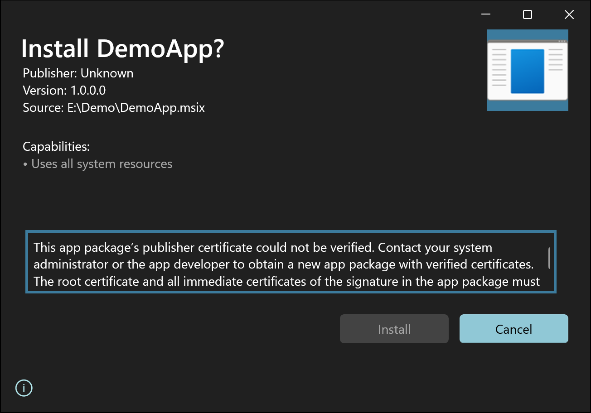
Add-AppxPackage .\DemoApp.msix
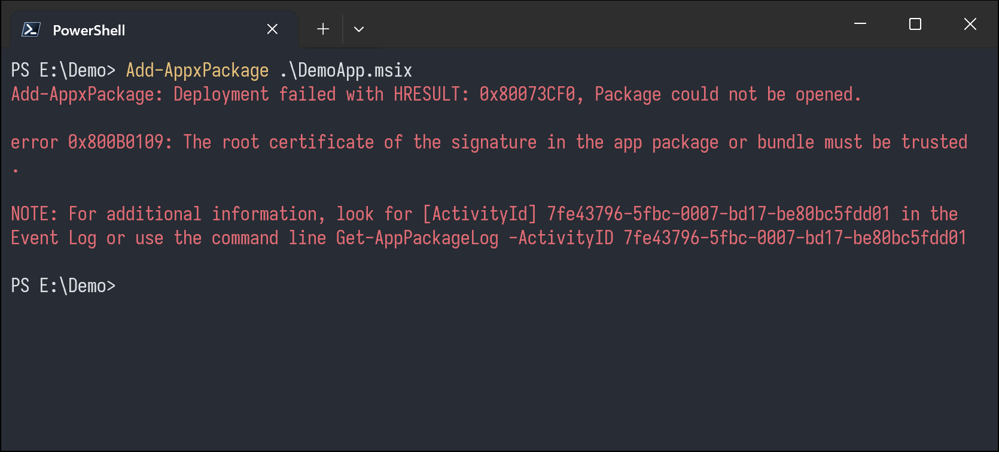
두 오류 모두 이 PC가 게시자 인증서를 신뢰하지 않아서 발생합니다 (0x800B010A, 0x800B0109)
구간사이드로딩의 벽
쪽
설치하려면 사용자가 이 단계를 직접 거쳐야 합니다
1인증서 내보내기
패키지 속성의 디지털 서명 탭에서 인증서 확인
2인증서 신뢰 등록
로컬 컴퓨터의 신뢰할 수 있는 루트 인증 기관에 설치
3환경에 따라 개발자 모드
정책으로 사이드로딩이 막힌 환경
4설치 다시 시도
앱 설치 관리자나 PowerShell, 종속성 오류가 나면 직접 해결
대상개발자가 아닌 일반 사용자
질문이 과정을 고객에게 안내할 수 있을까요?
구간사이드로딩의 벽
쪽
공인 인증서를 사면 되지 않을까요?
| 항목 | 내용 |
|---|---|
| 비용 | OV 코드 서명 인증서가 연 200달러대부터 시작하고, EV는 더 비쌉니다 |
| 하드웨어 | 2023년 6월부터 개인 키를 USB 토큰이나 HSM에 보관해야 합니다. CI에서 쓰려면 클라우드 서명 서비스가 따로 필요합니다 |
| 유효기간 | 2026년 3월부터 최대 460일로 줄어 거의 매년 재발급과 신원 확인을 거칩니다 |
| Azure Artifact Signing | 월 9.99달러로 저렴하지만 개인 개발자는 미국과 캐나다에서만 가입할 수 있고, 한국은 조직만 가입할 수 있습니다 |
개인 개발자, 오픈소스, 사내 도구에는 자체 서명 인증서와 신뢰 등록 자동화가 현실적인 선택입니다
2026년 10월 기준이며, 가격과 가입 조건은 자주 바뀝니다
구간 3, 라이브 데모Tauri 앱을
Tauri 앱을
더블클릭으로 설치
왜 Tauri인가기본 인스톨러가 MSI와 NSIS뿐이고, WebView2가
%LOCALAPPDATA%에 데이터를 남깁니다볼 장면
Installer-x64.exe 더블클릭, UAC, 설치 완료확인할 것앱 데이터가 어디에 생기고, 제거하면 어떻게 되는지
구간데모: Tauri 앱 더블클릭 설치
쪽
기본 NSIS 인스톨러로 설치한 뒤 제거해 보겠습니다
실행앱을 실행하면 WebView2 데이터 폴더가 생깁니다
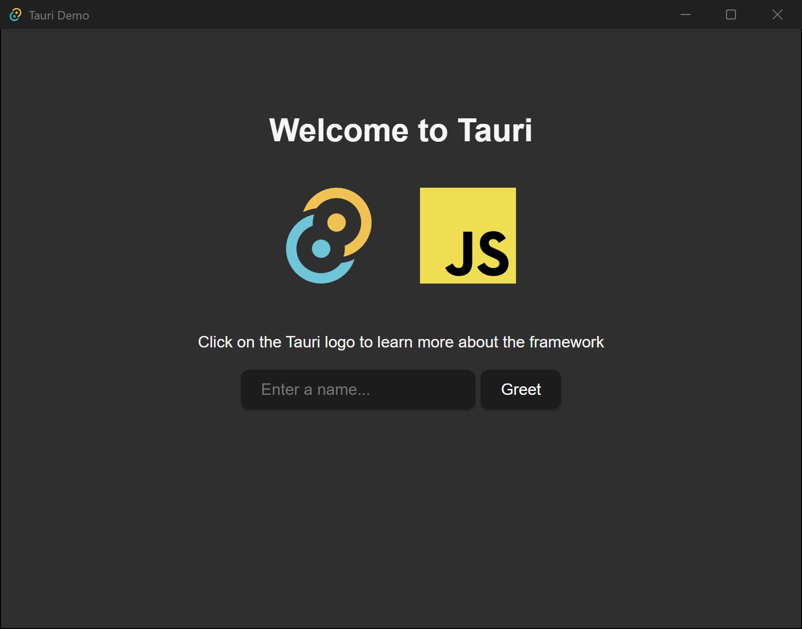
제거 후앱 폴더는 사라졌지만 데이터 폴더는 남았습니다
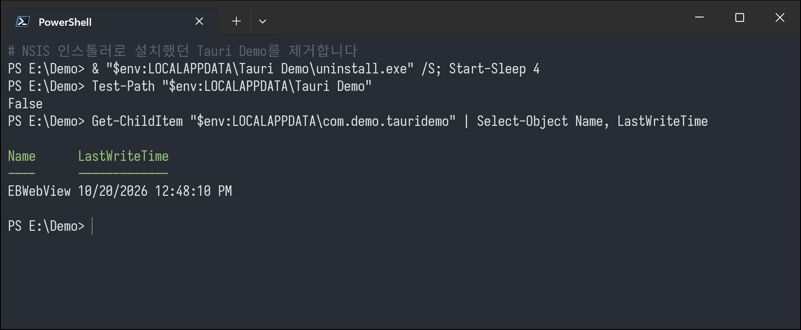
기본 설정으로 제거하면 %LOCALAPPDATA%\com.demo.tauridemo가 그대로 남습니다
구간데모: Tauri 앱 더블클릭 설치
쪽
같은 앱을 MSIX로 패키징하고 Installer-arm64.exe로 설치합니다
1. 설치 화면
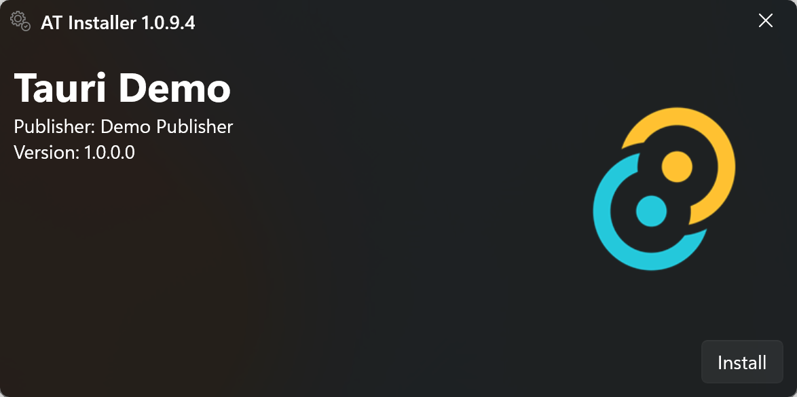
이름, 게시자, 아이콘은 패키지 매니페스트에서 읽어 옵니다. 인증서 등록, 개발자 모드 설정, PowerShell 실행은 사용자가 할 필요가 없습니다.
2. UAC 승인 후 설치 진행
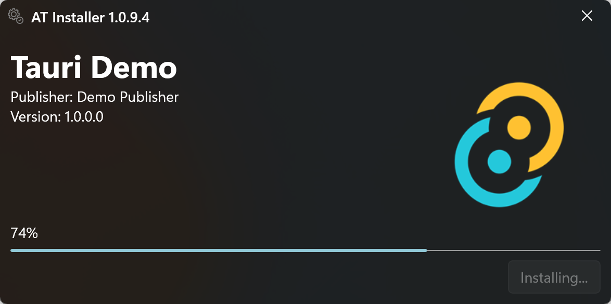
3. 설치 완료, 몇 초 뒤 자동 종료
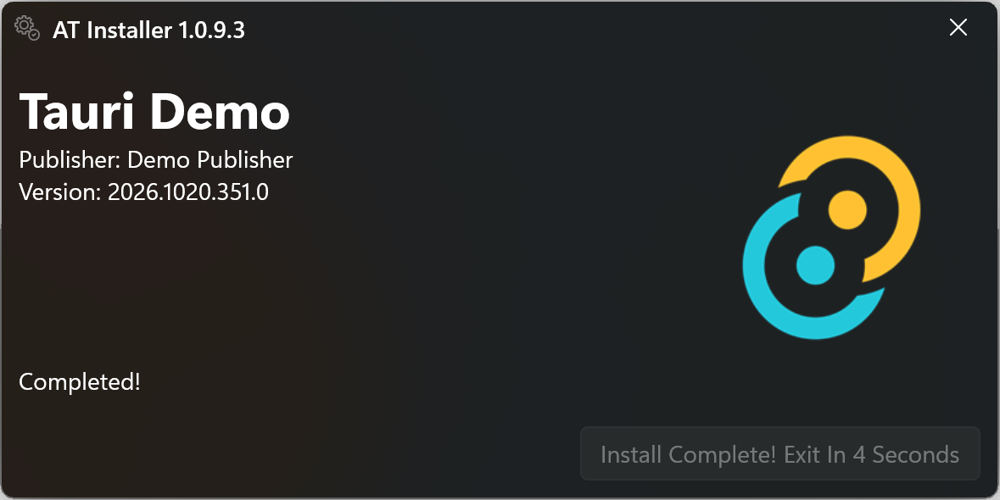
구간데모: Tauri 앱 더블클릭 설치
쪽
설치된 앱은 시작 메뉴에 등록되고, 데이터는 패키지 전용 위치에 저장됩니다
시작 메뉴일반 앱처럼 검색되고 실행됩니다
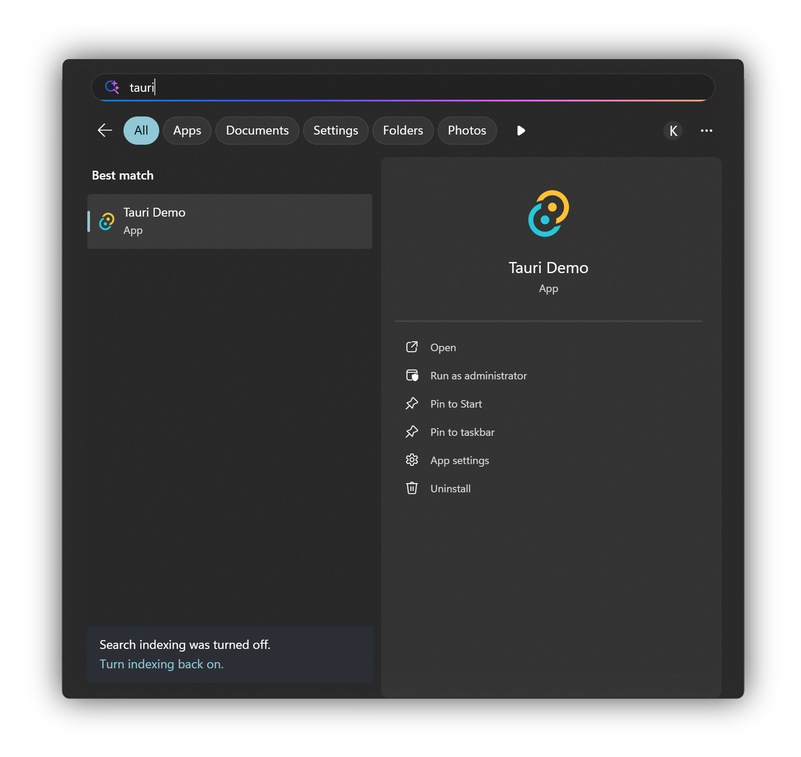
한 번 실행하고 닫은 뒤원래 경로에는 폴더가 생기지 않았습니다
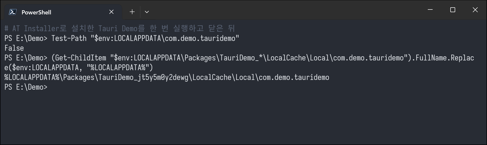
앱은 %LOCALAPPDATA%\com.demo.tauridemo에 쓰지만, 실제 파일은 Packages\TauriDemo_…\LocalCache\Local 아래에 저장됩니다.
구간데모: Tauri 앱 더블클릭 설치
쪽
앱을 제거하면 데이터도 함께 삭제됩니다
제거시작 메뉴에서 바로 제거
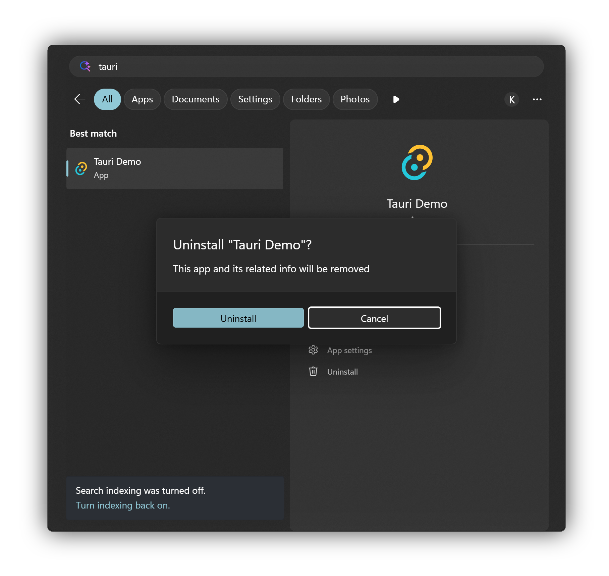
제거 후패키지 폴더가 삭제되었습니다
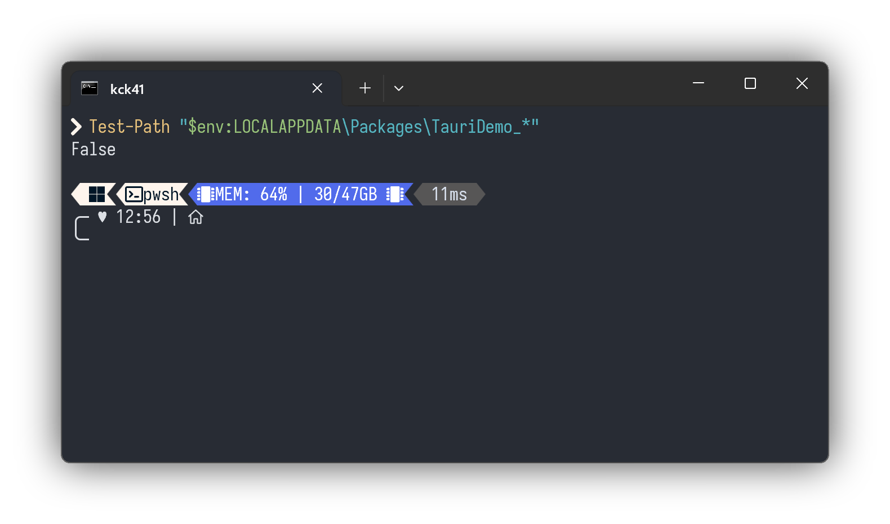
NSIS와 달리 남은 데이터 폴더가 없습니다
구간데모: Tauri 앱 더블클릭 설치
쪽
NSIS와 MSIX의 제거 결과 비교
| NSIS 인스톨러 | MSIX와 AT Installer | |
|---|---|---|
| 설치 | 인스톨러 실행 | Installer-x64.exe 더블클릭 |
| WebView2 데이터 | %LOCALAPPDATA%\<앱 식별자> | %LOCALAPPDATA%\Packages\TauriDemo_…\LocalCache\Local\com.demo.tauridemo |
| 제거 후 | 데이터 폴더가 그대로 남음 | 패키지 폴더까지 삭제됨 |
두 경우 모두 앱 코드는 같습니다. MSIX로 설치하면 운영체제가 쓰기 경로를 패키지 전용 위치로 리디렉션합니다.
구간 4설치기
설치기
내부 구조
주제설치기가 더블클릭 이후 처리하는 일
핵심권한, 인증서, 개발자 모드, 버전 비교, 배포
.NET 관점WinRT
PackageManager를 일반 클래스처럼 호출구간설치기 내부 구조
쪽
더블클릭부터 설치 완료까지
SFXInstaller-x64.exe
임시 폴더에 압축 해제 후 설치기 실행
분기확장자 확인
.msix면 MSIX 전용 창
1권한 상승
관리자로 다시 실행
2인증서 등록
서명에서 꺼내 신뢰 저장소에 추가
3개발자 모드
원래 값을 백업하고 활성화
4버전 비교
설치, 업데이트, 재설치, 차단
5배포
AddPackageAsync와 진행률 표시
finally개발자 모드 복원
설치 결과와 관계없이 원래 값으로 복원
설치 화면의 앱 이름, 아이콘, 버전은 패키지 안의 매니페스트에서 읽어 옵니다.
구간설치기 내부 구조
쪽
EXE 인스톨러는 SFX 모듈, 설정, 압축 파일을 이어 붙여 만듭니다
rem SFX 모듈 + 실행 설정 + 압축 파일 = 단일 EXE
copy /b 7zS.sfx + config_x64.txt + Archive.7z Installer-x64.exe
config_msixbundle.txt
;!@Install@!UTF-8! RunProgram="Installer.exe Package.msixbundle" ;!@InstallEnd@!
silent 설정은 실행 인자 뒤에 /silent를 붙입니다.
App.xaml.cs
// SFX가 작업 디렉터리를 바꾸므로 절대 경로로 고정 var packageFilePath = Path.GetFullPath(args[1]);
상대 경로로 받으면 패키지를 찾지 못하는 문제가 있었습니다.
구간설치기 내부 구조
쪽
설치기는 패키지 확장자에 따라 처리 흐름을 나눕니다
Installer/App.xaml.cs
var isSilent = args.Contains("/silent", StringComparer.OrdinalIgnoreCase); var shouldAutoInstall = args.Contains("/install", StringComparer.OrdinalIgnoreCase); // Dispatch to the appropriate window based on package file extension var extension = Path.GetExtension(packageFilePath).ToLowerInvariant(); if (extension == ".msix" || extension == ".msixbundle") _window = new MsixInstallerWindow(packageFilePath, isSilent, shouldAutoInstall); else _window = new InstallerWindow(packageFilePath, isSilent, shouldAutoInstall);
.atp기존 자체 설치 흐름압축 해제, 레지스트리 등록, 바로 가기 생성
.msix, .msixbundleMSIX 사이드로딩 흐름권한, 인증서, 개발자 모드, 배포 API
구간설치기 내부 구조
쪽
1단계: 관리자 권한으로 자신을 다시 실행합니다
Installer/Helper/AdministratorHelper.cs
public static bool IsRunningAsAdministrator() { using var identity = WindowsIdentity.GetCurrent(); return new WindowsPrincipal(identity).IsInRole(WindowsBuiltInRole.Administrator); } public static void RelaunchElevatedPreservingArguments() { var arguments = string.Join(' ', Environment.GetCommandLineArgs().Skip(1) .Select(arg => arg.Contains(' ') ? $"\"{arg}\"" : arg)); if (!arguments.Contains("/install", StringComparison.Ordinal)) arguments += " /install"; try { Process.Start(new ProcessStartInfo { FileName = Environment.ProcessPath, Arguments = arguments, Verb = "runas", UseShellExecute = true }); } catch { } Environment.Exit(0); }
/install 인자가 있으면 다시 실행된 설치기가 사용자 입력 없이 설치를 진행합니다.
구간설치기 내부 구조
쪽
2단계: 패키지 서명에서 인증서를 꺼내 신뢰 저장소에 등록합니다
Installer/Msix/MsixCertificateHelper.cs
#pragma warning disable SYSLIB0057 var signerCertificate = new X509Certificate2(X509Certificate.CreateFromSignedFile(packageFilePath)); #pragma warning restore SYSLIB0057 using var store = new X509Store(StoreName.Root, StoreLocation.LocalMachine); store.Open(OpenFlags.ReadWrite); var existing = store.Certificates.Find(X509FindType.FindByThumbprint, signerCertificate.Thumbprint, false); if (existing.Count == 0) store.Add(signerCertificate);
별도 인증서 파일필요 없습니다
서명된 패키지 자체에서 서명자 인증서를 읽습니다.
SYSLIB0057.NET 9부터 경고서명된 파일에서 인증서를 꺼내는 대체 API가 X509CertificateLoader에 없어서 경고를 억제했습니다.
구간설치기 내부 구조
쪽
3단계: 개발자 모드를 켜고, 설치가 끝나면 원래 값으로 되돌립니다
레지스트리 키HKLM\SOFTWARE\Microsoft\Windows\CurrentVersion\AppModelUnlock
값AllowDevelopmentWithoutDevLicense
참고Windows 10 2004부터는 신뢰된 서명이 있으면 개발자 모드 없이도 사이드로딩이 허용됩니다
Installer/MsixInstallerWindow.xaml.cs
int? originalDeveloperModeState = null; try { originalDeveloperModeState = DeveloperModeHelper.BackupDeveloperModeState(); bool developerModeEnabled = DeveloperModeHelper.TryEnableDeveloperMode(); // 버전 비교, 배포 ... } finally { if (originalDeveloperModeState.HasValue) DeveloperModeHelper.TryRestoreDeveloperModeState(originalDeveloperModeState.Value); }
구간설치기 내부 구조
쪽
4단계: 이미 설치된 버전과 비교합니다
Installer/Msix/MsixDeploymentHelper.cs
var packageManager = new PackageManager(); foreach (var package in packageManager.FindPackagesForUser(string.Empty)) { if (package.Id.Name != metadata.Name) continue; // package.Id.Version을 System.Version으로 바꿔 패키지 버전과 비교 }
| 설치된 버전 | 버튼 | 동작 |
|---|---|---|
| 없음 | 설치 | 바로 배포 |
| 패키지보다 낮음 | 업데이트 | 그대로 배포하면 운영체제가 업데이트로 처리 |
| 패키지와 같음 | 재설치 | 확인을 받은 뒤 RemovePackageAsync 후 배포 |
| 패키지보다 높음 | 다운그레이드 불가 | 버튼 비활성화, silent 모드면 종료 코드 24 |
구간설치기 내부 구조
쪽
5단계: AddPackageAsync로 패키지를 배포합니다
Installer/Msix/MsixDeploymentHelper.cs
public static async Task<MsixDeploymentResult> AddPackageAsync(string packageFilePath, IProgress<DeploymentProgress> progress) { var packageManager = new PackageManager(); var packageUri = new Uri(packageFilePath); var deploymentOperation = packageManager.AddPackageAsync(packageUri, null, DeploymentOptions.ForceApplicationShutdown); try { await deploymentOperation.AsTask(progress); } catch (Exception exception) { return new MsixDeploymentResult { IsSuccessful = false, ErrorText = exception.Message, ... }; } // 완료 상태와 오류 코드를 MsixDeploymentResult로 정리해 반환 }
ForceApplicationShutdown실행 중인 이전 버전을 종료하고 업데이트AsTask(progress)WinRT 진행률을 IProgress<T>로 받아 진행률 막대에 연결구간설치기 내부 구조
쪽
콘솔 앱이나 WPF 앱에서도 PackageManager를 호출할 수 있습니다
*.csproj
<TargetFramework>net10.0-windows10.0.26100.0</TargetFramework>
- 대상 프레임워크에 Windows SDK 버전을 적으면 C#/WinRT 프로젝션이 함께 참조됩니다.
PackageManager,X509Store,Registry를 같은 C# 코드 안에서 섞어 씁니다.ApplicationData.Current처럼 패키지 ID가 필요한 API는 예외입니다.
비동기
IAsyncOperationWithProgress는 AsTask()로 await진행률
AsTask(IProgress<T>)로 그대로 연결패키지 ID 없이이 설치기도 패키징되지 않은 일반 실행 파일입니다. 패키지 ID 없이도 다른 MSIX를 설치할 수 있습니다
구간설치기 내부 구조
쪽
silent 모드에서는 설치 결과를 종료 코드로 반환합니다
사내 배포 도구나 스크립트가 설치 결과를 판단할 수 있도록 실패 지점마다 다른 종료 코드를 돌려줍니다.
config_msix_silent.txt
RunProgram="Installer.exe Package.msix /silent"
| 코드 | 의미 |
|---|---|
| 0 | 설치 성공 |
| 24 | 더 높은 버전이 설치되어 있어 다운그레이드 불가 |
| 27 | 개발자 모드 활성화 실패 |
| 28 | 패키지 배포 실패 |
| 29 | 인증서 추출 또는 등록 실패 |
| 30 | 같은 버전이 이미 설치됨 |
구간 5생성기
생성기
내부 구조
입력빌드 출력 폴더, 또는 이미 만든 MSIX
자동화아키텍처 감지, 매니페스트 읽기, 패키징, SFX 조립
출력아키텍처별
Installer-*.exe, 여러 개면 ZIP구간생성기 내부 구조
쪽
MSIX 인스톨러 생성기의 두 가지 사용 방법
입력빌드 출력 폴더
Electron, Tauri, WPF 등 프레임워크와 관계없음
MSIX 패키징 탭인증서, 매니페스트, 패키징
세 단계를 거쳐 .msix 또는 .msixbundle
EXE 패키징 탭더블클릭 인스톨러 조립
이미 만든 MSIX도 바로 넣을 수 있습니다
출력Installer-*.exe
아키텍처가 여러 개면 ZIP으로 묶음
MSIX를 이미 만드는 프로젝트EXE 패키징 탭만 쓰면 됩니다
MSIX를 지원하지 않는 프레임워크MSIX 패키징 탭부터 시작합니다
내부 구현앞에서 본 CLI와 같은 공통 라이브러리를 씁니다
구간생성기 내부 구조
쪽
MSIX 패키징 1단계: 인증서 생성
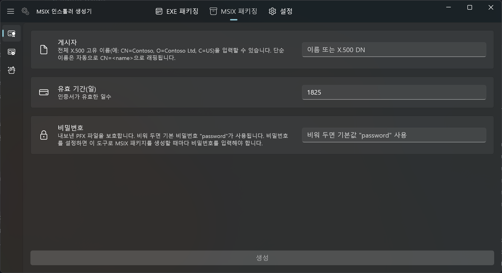
게시자이름만 입력하면 CN=이름 형식으로 변환
유효 기간기본 1825일(5년)
비밀번호비워 두면 기본값 password
재사용하는 이유같은 인증서로 계속 서명해야 사용자가 버전마다 새 인증서를 신뢰하지 않아도 됩니다
구간생성기 내부 구조
쪽
2단계: 매니페스트 작성
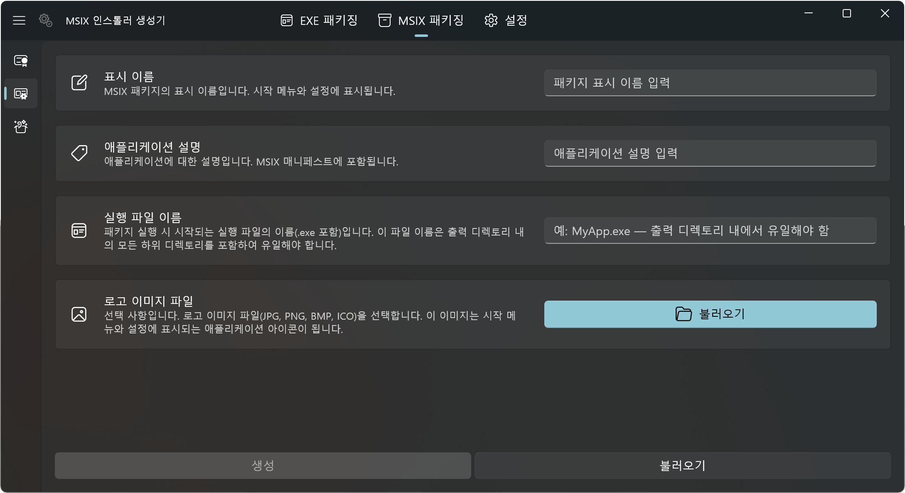
표시 이름, 설명시작 메뉴와 설정 앱에 보이는 정보
실행 파일 이름폴더마다 이 파일을 찾아 아키텍처를 감지합니다
로고선택 사항, 설치 화면과 시작 메뉴 아이콘
.aticmsixconfig버전과 인증서를 뺀 정보만 담아 릴리스마다 재사용합니다
구간생성기 내부 구조
쪽
3단계: 버전과 빌드 출력을 지정해 패키징
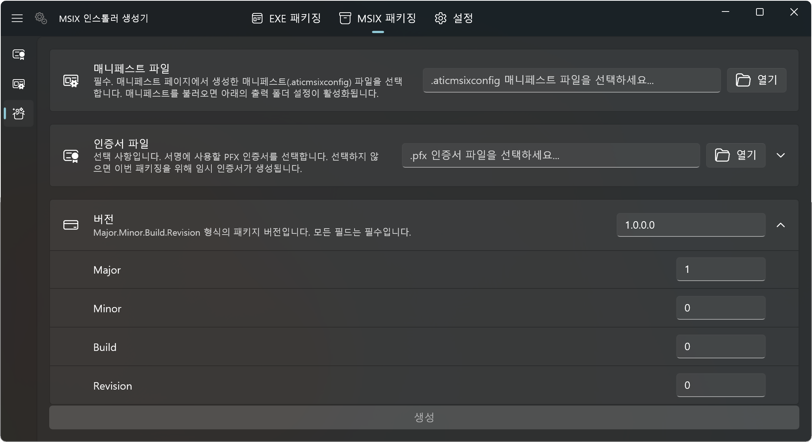
매니페스트2단계에서 저장한 파일을 불러옵니다
인증서1단계의 PFX, 비우면 이번만 쓸 임시 인증서
버전실행 파일의 파일 버전으로 자동으로 채웁니다
출력 폴더아키텍처별 빌드 폴더를 추가하면 하나면 .msix, 여럿이면 .msixbundle
구간생성기 내부 구조
쪽
EXE 패키징 탭은 MSIX의 패키지 정보를 읽어 표시합니다
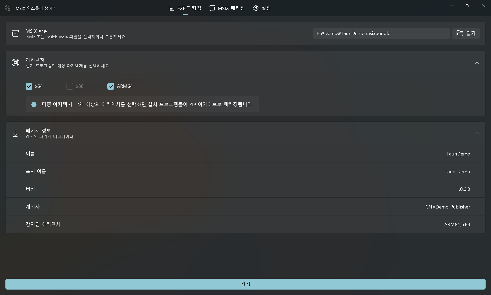
패키지 정보이름, 표시 이름, 버전, 게시자를 매니페스트에서 읽습니다
아키텍처번들에 든 아키텍처만 고를 수 있습니다. 이 번들에는 x86이 없습니다
생성하나를 고르면 EXE, 둘 이상이면 아키텍처별 EXE를 담은 ZIP
구간생성기 내부 구조
쪽
생성기 자체도 MSIX로 만들어 Microsoft Store에서 배포합니다
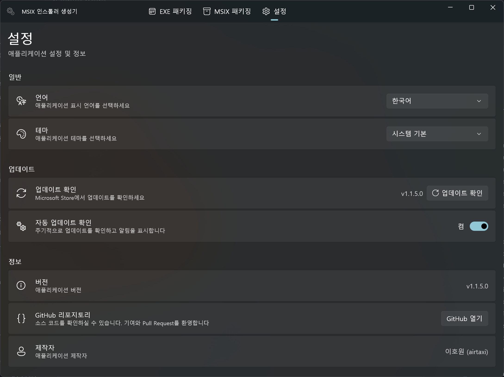
언어영어, 한국어, 일본어, 중국어 간체와 번체
테마시스템 기본, 밝게, 어둡게
업데이트Microsoft Store 업데이트를 주기적으로 확인하고 알림
받는 곳Microsoft Store에서 무료, 소스는 GitHub에 공개
구간생성기 내부 구조
쪽
실행 파일의 PE 헤더로 아키텍처를 판별합니다
| 위치 | 읽는 값 |
|---|---|
| 0x00 | MZ 서명 (0x5A4D) |
| 0x3C | PE 헤더 위치 |
| PE | PE\0\0 서명 |
| PE + 4 | Machine 필드 2바이트 |
빌드 출력 폴더마다 실행 파일을 찾아 아키텍처를 정하고, 같은 아키텍처가 두 번 들어오면 오류로 처리합니다.
Shared/Helpers/PeArchitectureDetector.cs
stream.Seek(PeOffsetLocation, SeekOrigin.Begin); // 0x3C var peOffset = reader.ReadInt32(); stream.Seek(peOffset, SeekOrigin.Begin); var peSignature = reader.ReadUInt32(); if (peSignature != PeSignature) return "Unknown"; var machine = reader.ReadUInt16(); return machine switch { 0x8664 => "x64", 0x014C => "x86", 0xAA64 => "ARM64", _ => "Unknown" };
구간생성기 내부 구조
쪽
MSIX는 ZIP 형식이고, 번들 안에는 아키텍처별 MSIX가 들어 있습니다
App.msixbundle ├─ AppxMetadata/ │ └─ AppxBundleManifest.xml 이름, 게시자, 버전, 아키텍처 목록 ├─ App_x64.msix │ ├─ AppxManifest.xml 표시 이름, 게시자 표시 이름 │ └─ Assets/ │ └─ StoreLogo.scale-400.png 가장 큰 scale을 아이콘으로 ├─ App_arm64.msix └─ App_x86.msix
ZipArchive로 열고XDocument로 매니페스트를 읽습니다.- 번들 안의 첫 애플리케이션 패키지를 다시
ZipArchive로 열어 표시 이름을 가져옵니다. - 로고는 여러 scale 가운데 가장 큰 이미지를 골라 설치 화면에 씁니다.
추가 라이브러리 없이 BCL만으로 처리합니다.
구간생성기 내부 구조
쪽
MSIX 패키징은 WinApp CLI로 처리합니다
준비폴더 복사
빌드 출력을 감지된 아키텍처 이름의 작업 폴더로 복사
아키텍처마다manifest generate
표시 이름, 버전, 설명, 로고로 매니페스트 생성
한 번에pack
폴더가 하나면 .msix, 여러 개면 .msixbundle
winapp.exe pack x64 ARM64 --executable MyApp.exe --cert cert.pfx --cert-password "********"
인증서 하나를 여러 릴리스에 재사용하세요. 버전마다 새 인증서로 서명하면 사용자가 매번 새 인증서를 신뢰해야 합니다
구간생성기 내부 구조
쪽
MSIX를 아키텍처별 EXE로 조립합니다
| 순서 | 작업 | 내용 |
|---|---|---|
| 1 | 템플릿 확인 | GitHub Releases의 최신 SFX 템플릿을 받아 버전별로 캐시 |
| 2 | 아키텍처 교집합 | 사용자가 고른 아키텍처와 패키지에 실제로 든 아키텍처를 비교 |
| 3 | 이전 산출물 정리 | 캐시를 재사용하므로 지난 실행의 패키지와 압축 파일을 먼저 삭제 |
| 4 | 압축 | Package.msixbundle을 복사하고 Archive.7z 생성 |
| 5 | 결합 | copy /b로 SFX 모듈, 설정, 압축 파일을 이어 붙임 |
| 6 | 묶기 | EXE가 하나면 그대로, 여러 개면 Installers.zip으로 |
구간 6, 라이브 데모.NET 앱을
.NET 앱을
CLI로 패키징
입력작은 WPF 앱 프로젝트
도구
dotnet publish와 aticmsixgen출력
Installer-x64.exe, Installer-arm64.exe구간데모: .NET 앱 CLI 파이프라인
쪽
빌드 출력에서 인스톨러를 만드는 명령
# 한 번만: 설치와 인증서 생성 dotnet tool install --global aticmsixgen aticmsixgen cert generate --publisher "Demo" --output cert.pfx # 릴리스마다 dotnet publish -c Release -r win-x64 -o out\x64 dotnet publish -c Release -r win-arm64 -o out\arm64 aticmsixgen msix-quick-pack --display-name "Demo App" --description "Demo" --executable "DemoApp.exe" ` -f out\x64 -f out\arm64 --cert E:\Demo\cert.pfx --version 1.0.0.0 -o Demo.msixbundle aticmsixgen exe-pack -i Demo.msixbundle -a arm64 -o Installer-arm64.exe
명령cert generate
자체 서명 PFX 생성
명령msix-pack, msix-quick-pack
매니페스트 파일 또는 인라인 매개변수로 패키징
명령exe-pack
MSIX를 더블클릭 인스톨러로
구간데모: .NET 앱 CLI 파이프라인
쪽
msix-quick-pack 실행 결과
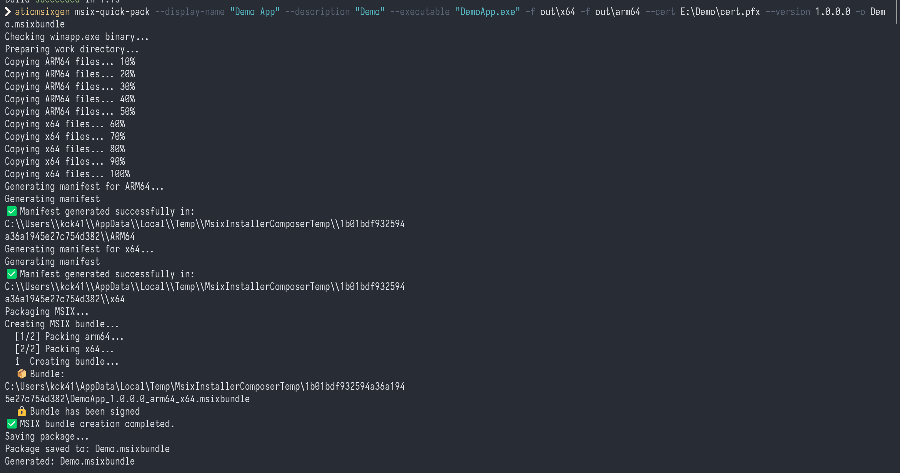
- 두 폴더의
DemoApp.exe에서 ARM64와 x64를 자동으로 감지합니다. - 아키텍처마다 매니페스트를 만들고 패키지를 하나씩 만듭니다.
- 두 패키지를
.msixbundle로 묶고 인증서로 서명합니다. - 사용자가 지정한 것은 빌드 출력 폴더와 인증서 파일입니다.
구간데모: .NET 앱 CLI 파이프라인
쪽
exe-pack 실행 결과
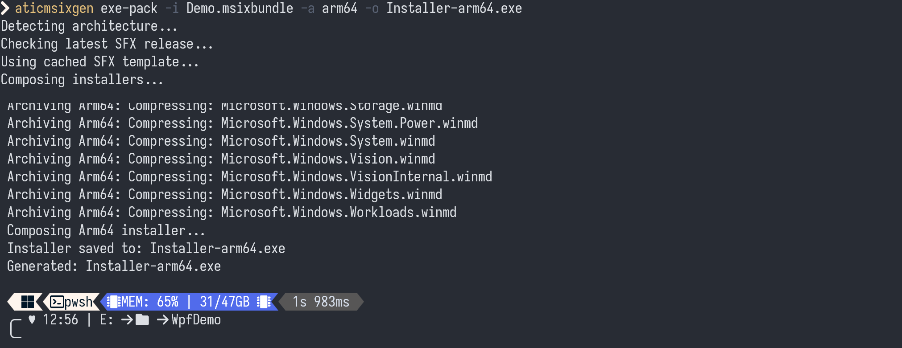
템플릿GitHub Releases의 SFX 템플릿을 캐시해서 재사용
압축과 결합7z 압축 후 SFX 모듈, 설정, 압축 파일을 결합
결과데모 1에서 사용한 것과 같은 형식의 Installer-arm64.exe
구간 7.NET 플랫폼
.NET 플랫폼
활용
구조GUI와 CLI가 같은 코드를 씁니다
NativeAOT설치기와 CLI를 런타임 없이 실행
배포RID별 dotnet tool과 GitHub Actions
구간.NET 플랫폼 활용
쪽
GUI에서 공통 코드를 떼어 CLI와 나눠 씁니다
WinUI 3 앱MsixInstallerComposer
CommunityToolkit.Mvvm, DI, 페이지와 뷰모델
NativeAOT 콘솔 앱aticmsixgen
System.CommandLine, Microsoft.Extensions.DependencyInjection
공통 라이브러리, net10.0MsixInstallerComposer.Shared
PE 아키텍처 감지, MSIX 매니페스트 읽기, WinApp CLI와 SFX 템플릿 다운로드, 프로세스 실행 도우미, 매니페스트 설정 모델
UI에 묶인 코드는 서비스에 남기고, 파일과 프로세스만 다루는 코드는 대상 프레임워크가 net10.0인 라이브러리로 옮겼습니다. 그래서 CLI가 Windows App SDK 없이 빌드됩니다.
구간.NET 플랫폼 활용
쪽
NativeAOT로 가려면 리플렉션을 걷어내야 했습니다
| 걸림돌 | 바꾼 방법 |
|---|---|
| JSON 직렬화 | 리플렉션 기반 직렬화 대신 JsonSerializerContext 소스 생성 |
| WinUI 지역화 라이브러리 | 리플렉션을 쓰는 외부 라이브러리를 걷어내고 MRT Core ResourceLoader로 교체 |
2025-12Installer와 Composer를 NativeAOT로 전환
2026-07지역화를 MRT Core로 바꿔 남은 리플렉션 제거
2026-07
aticmsixgen도 처음부터 NativeAOT로구간.NET 플랫폼 활용
쪽
.NET 10부터 NativeAOT 실행 파일을 dotnet tool로 배포할 수 있습니다
MsixInstallerComposerCommandLine.csproj
<PublishAot>true</PublishAot> <RuntimeIdentifiers>win-x86;win-x64;win-arm64</RuntimeIdentifiers> <ToolPackageRuntimeIdentifiers>$(RuntimeIdentifiers)</ToolPackageRuntimeIdentifiers> <PackAsTool>true</PackAsTool> <ToolCommandName>aticmsixgen</ToolCommandName>
패키지 구성기본 패키지 하나와 RID별 패키지 세 개
설치하는 쪽자기 PC에 맞는 RID 패키지를 자동으로 받음
결과.NET 런타임 없이 바로 실행되는 단일 실행 파일
dotnet tool install --global aticmsixgen
구간.NET 플랫폼 활용
쪽
csproj 버전을 올려 push하면 NuGet에 자동으로 게시됩니다
1기본 패키지 pack
RID 패키지를 가리키는 진입점 패키지
2RID별 pack
win-x86, win-x64, win-arm64를 NativeAOT로
3패키지 검증
네 개가 모두 만들어졌는지 확인
4NuGet push
nuget.org에 게시
runs-on: windows-latest # ... dotnet pack MsixInstallerComposerCommandLine.csproj -c Release -p:ContinuousIntegrationBuild=true dotnet pack MsixInstallerComposerCommandLine.csproj -c Release -p:Platform=$platform # x86, x64, ARM64
데모 2의 명령을 같은 워크플로에 넣으면 앱 릴리스마다 인스톨러가 함께 만들어집니다.
구간마치며
쪽
정리
MSIX가상화와 깨끗한 제거는 운영체제에 맡깁니다
더블클릭 설치인증서 등록과 패키지 배포는 설치기가 처리하고, 사용자는 EXE를 실행해 설치합니다
빌드 파이프라인빌드 결과물을 aticmsixgen으로 바로 인스톨러로 만들고, CI에서도 같은 명령을 씁니다
소스 코드github.com/airtaxi/
AT-Installer
AT-Installer
GUI 생성기Microsoft Store
MSIX 인스톨러 생성기
MSIX 인스톨러 생성기
CLIdotnet tool install
-g aticmsixgen
-g aticmsixgen
보내는 사람이호원 (airtaxi)
받는 곳대한민국 .NET Conf 2026
상태배송 완료
감사합니다
질문 받겠습니다
발표자료
발표자료aticmsix.netconf.
kagamine-rin.com
kagamine-rin.com
소스 코드github.com/airtaxi/
AT-Installer
AT-Installer
CLIaticmsixgen